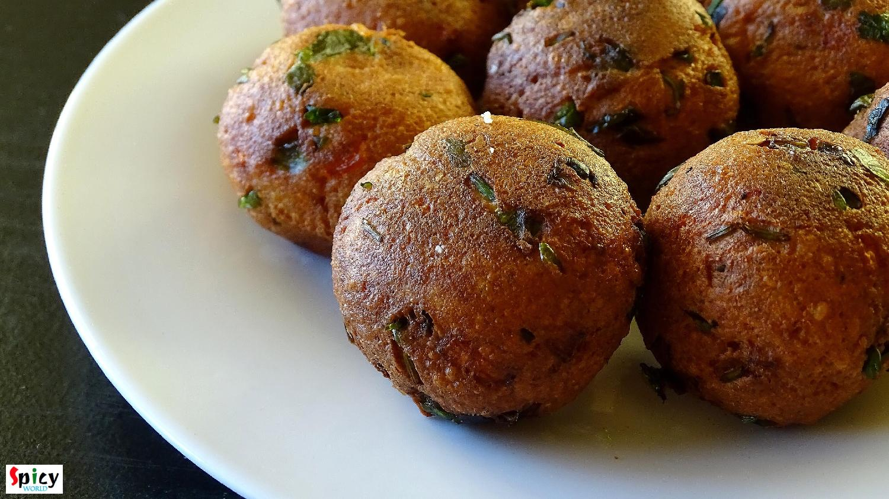

Paneer Kofta Curry / Fried Cottage cheese balls curry

Last weekend I wanted to make something new veg maincourse, thats why I chose this 'paneer kofta curry' and it was just delicious. You can make kofta curry with raw banana, jack fruit, chicken, fish, mutton etc. They all tastes really good. I made it with paneer kofta, you can see how good looking they are and by clicking the picture below you can see how it's prepared. 
I served this curry with plain rice but you can also serve with naan, kulcha, pulaao, jeera rice or even with paratha. Every combo will make your meal a special one. There are several ways you can make this curry, here is how I made it.

Ingredients
- 10 - 15 paneer koftas.
- 1 onion thinly sliced.
- 2 inches of ginger, roughly chopped.
- 2 cloves of garlic, roughly chopped.
- 2 green chilies, sliced.
- 1 tomatoes, chopped.
- 10 - 12 cashews.
- Whole spices(4 green cardamoms, 1 cinnamon stick, 6 black peppercorn, 4 cloves).
- Spice powder ( 1 Teaspoon turmeric powder, ½ Teaspoon red chilli powder, 1 Teaspoon garam masala powder).
- 2 Teaspoons kasuri methi / dry fenugreek leaves.
- 4 Tablespoons of cream.
- Salt and sugar.
- Warm water.
- 5 Tablespoons of white oil.

Steps
Heat 1 tablespoon oil in a pan.
Add chopped garlic and ginger. Saute them for 30 seconds.

Add sliced onion. Fry them for 5 minutes.
Then add cashews and green chilies. Fry them another 3 minutes.

Then add chopped tomatoes, pinch of salt and sugar.
Cook it till they become mushy.

After put the mixture in a blending jar and make a smooth paste.

Now heat the remaining oil.
Add the whole spices. Saute them fir a minute.

Then bring the heat lower and add all the spice powder. Mix them for 45 seconds.

After that add the smooth paste of onion and tomato. Mix it for 6 minutes in medium flame.
Add salt and sugar as per your taste. Mix them untill the oil separates.

Then add a cup of warm water. Cook this for 8 minutes.
Then add the cream and kasuri methi. Mix it well.

Now add the paneer koftas in the curry. Mix and simmer for 2-3 minutes.
Then turn off the heat.

If you are planning to eat this later, then don't add the koftas in the curry. Just add them in the curry before serving. Don't forget to warm up the curry a bit.

Your Paneer kofta curry is ready ...
- Serve this hot with rice, naan, kulcha or pulaao ...


Leave Your Comments